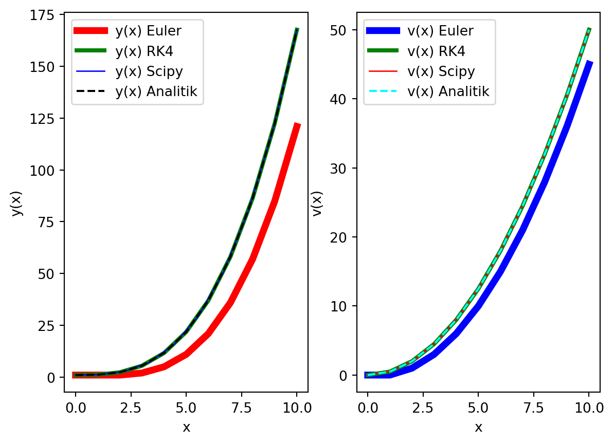

################################################
## Modül yolunu varsayılan yol olarak ekleme ve modülü içe aktarma
import os
import sys
# Bu dosyanın bulunduğu dizini al
current_dir = os.path.abspath('')
# 3 üst dizine çık
module_dir = os.path.join(os.path.abspath(os.path.join(current_dir, os.pardir, os.pardir, os.pardir)), 'moduller')
# moduller dizinini yol olarak ekle
sys.path.append(module_dir)
# bilYonMod.py modülünü içe aktar
import bilYonMod as bym
################################################
import numpy as np
import matplotlib.pyplot as plt
import scipy.integrate as spInt
# Fonksiyon
def fonk_yVek_x(yVek, x):
dydx = yVek[1]
return np.array([dydx, x])
# Başlangıç koşulları
y0 = 1
v0 = 0
x0 = 0
xSon = 10
n = 10
# Çöz, Euler
xTumEuler, yTum_VekEuler = bym.add_coz_euler_sistem(fonk_yVek_x, x0, xSon, np.array([y0, v0]), n)
# Çöz, 4. Mertebe Runge-Kutta
xTumRK4, yTum_VekRK4 = bym.add_coz_rk4_sistem(fonk_yVek_x, x0, xSon, np.array([y0, v0]), n)
# Çöz, scipy.integrate.odeint
xTumScipy= np.linspace(x0, xSon, n)
yTumScipy= spInt.odeint(fonk_yVek_x, np.array([y0, v0]), xTumScipy)
# Analitik çözüm
yAnalitik = xTumEuler**3/6 + 1
vAnalitik = xTumEuler**2/2
# Çiz
fig, ax = plt.subplots(1, 2)
# Sol grafik
ax[0].plot(xTumEuler, yTum_VekEuler[0], lw='5', label='y(x) Euler', color='red')
ax[0].plot(xTumRK4, yTum_VekRK4[0], lw='3', label='y(x) RK4', color='green')
ax[0].plot(xTumScipy, yTumScipy[:,0], lw='1', label='y(x) Scipy', color='blue')
ax[0].plot(xTumEuler, yAnalitik, label='y(x) Analitik', color='black', linestyle='--')
ax[0].set_xlabel('x')
ax[0].set_ylabel('y(x)')
ax[0].legend()
# Sağ grafik
ax[1].plot(xTumEuler, yTum_VekEuler[1], lw='5', label='v(x) Euler', color='blue')
ax[1].plot(xTumRK4, yTum_VekRK4[1], lw='3', label='v(x) RK4', color='green')
ax[1].plot(xTumScipy, yTumScipy[:,1], lw='1', label='v(x) Scipy', color='red')
ax[1].plot(xTumEuler, vAnalitik, label='v(x) Analitik', color='cyan', linestyle='--')
ax[1].set_xlabel('x')
ax[1].set_ylabel('v(x)')
ax[1].legend()
plt.show()